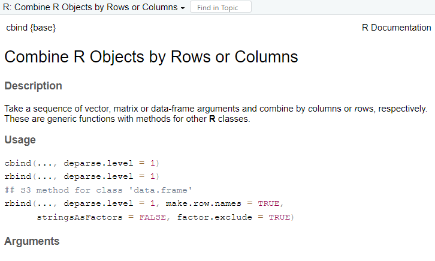
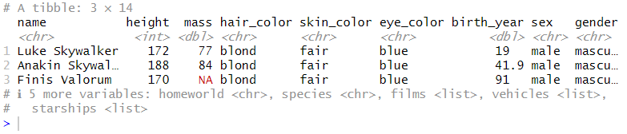
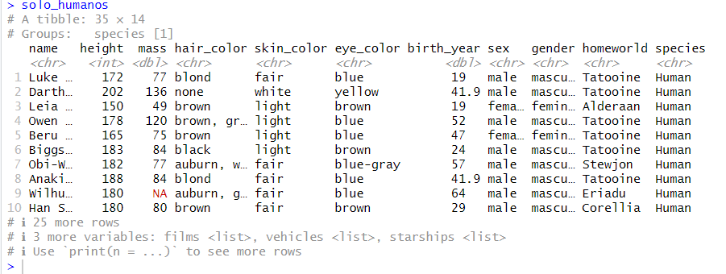
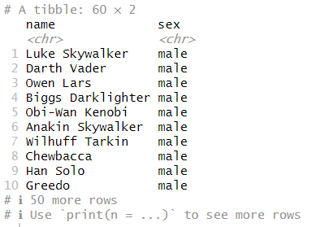
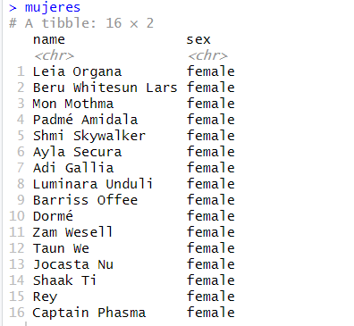
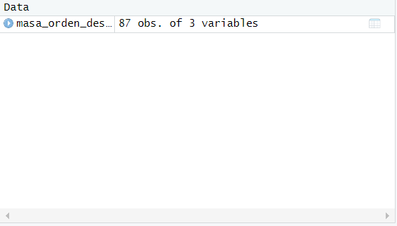
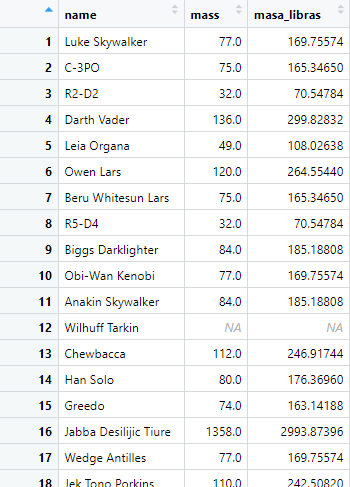

Creado Por: Adrián Peraza Baldizón
Instrucciones de Uso de la Tabla de Contenidos y Navegación: Para usar la tabla de contenidos y navegar más rápido en la interfaz, de click en el concepto que desea conocer y se dirigirá inmediatamente a ese concepto. Ademas, Se puede dar clic en "Regresar a Inicio" en cada subtitulo o concepto para regresar al inicio de la guía.
Estructura del Glosario: El glosario contiene una tabla de contenidos y 25 conceptos del lenguaje de programación R. Cada concepto, comienza con la definición y despues se muestra un ejemplo de uso en un espacio de código de fondo negro con letras verdes. Dentro del ejemplo de uso, se muestran los comandos y los comentarios; loss comentarios inician con "#" (numeral) y son informativos, es decir no se ejecutan, lo demas si se ejecuta
Este comando muestra el directorio/ruta de trabajo actual (working directory). En este directorio se guardaran los archivos que se van a utilizar en el proyecto como archivos planos (csv), Excel, u otras fuentes de datos.
# Se consulta el working directory actual
getwd()
[1] "C:/Users/adrix/Documents"
Cambia el working directory a la ruta que se le da por parámetro (ruta indicada). Este comando se usa junto a getwd() para poder ubicar correctamente el working directory
# Se define el nuevo working directory
setwd("C:/Users/adrix/Documents/R")
# Se muestra el nuevo working directory
getwd()
[1] "C:/Users/adrix/Documents/R"
Sirve para conseguir ayuda sobre una función de R. Es muy útil cuando uno está empezando a usar la herramienta o cuando simplemente no se recuerda cómo se puede usar una función.
# Se solicita a la función help() ayuda para comprender la función de cbind()
help(cbind)

Pantalla de ayuda de cbind() en RStudio
Es un comando fundamental en R. Permite para utilizar libreías ya sean nativas o externas en R. Para usar este comando, primero hay que instalar la librería mediante el comando de install.packages(), o mediante la interfaz de RStudio.
# Se instala la libreria, en este caso vamos a instalar dplyr
install.packages("dplyr")
# Se carga la libreria
library(dplyr)
Al usar este comando, podemos solicitar un resumen de la información de una variable sin importar su tipo ya sea un vector, matriz, dataframe o cualquier otro tipo de dato. Otra función que es similar a summary() es la función str().
# Se crea una matriz
ejemplo_matriz <- matrix(1:30, byrow=TRUE, nrow=3)
# Se muestra un resumen de la matriz
summary(ejemplo_matriz)
# Resumen de la matriz
V1 V2 V3 V4 V5 V6
Min. : 1 Min. : 2 Min. : 3 Min. : 4 Min. : 5 Min. : 6
1st Qu.: 6 1st Qu.: 7 1st Qu.: 8 1st Qu.: 9 1st Qu.:10 1st Qu.:11
Median :11 Median :12 Median :13 Median :14 Median :15 Median :16
Mean :11 Mean :12 Mean :13 Mean :14 Mean :15 Mean :16
3rd Qu.:16 3rd Qu.:17 3rd Qu.:18 3rd Qu.:19 3rd Qu.:20 3rd Qu.:21
Max. :21 Max. :22 Max. :23 Max. :24 Max. :25 Max. :26
V7 V8 V9 V10
Min. : 7 Min. : 8 Min. : 9 Min. :10
1st Qu.:12 1st Qu.:13 1st Qu.:14 1st Qu.:15
Median :17 Median :18 Median :19 Median :20
Mean :17 Mean :18 Mean :19 Mean :20
3rd Qu.:22 3rd Qu.:23 3rd Qu.:24 3rd Qu.:25
Max. :27 Max. :28 Max. :29 Max. :30
# Resumen con la función str()
str(ejemplo_matriz)
int [1:3, 1:10] 1 11 21 2 12 22 3 13 23 4 ...
Es una estructura de R en la cual se almacenan múltiples valores de un solo tipo de dato. Por ejemplo, si desea guardar números solo se puede guardar números. Para definir el contenido de una función, se usa el comando c() y adentro de los paréntesis se ingresan los datos separados por una coma ','.
# Se crea un vector
numeros_pares <- c(2, 4, 6, 8, 10)
Provincias_GAM <- c("Alajuela","Cartago","Heredia", "San José")
# Se muestra el vector
numeros_pares
[1] 2 4 6 8 10
Provincias_GAM
[1] "Alajuela" "Cartago" "Heredia" "San José"
Es una estructura de datos similar a u vector, pero con la diferencia de que sus datos se pueden clasificar en niveles o categorías según corresponda. Estas categorías pueden ser ordinales o nominales. Los factores nominales son aquellos que tienen ninguna jeraquía entre ellos; normalmente son datos tipo texto. Los factores ordinales son aquellos que tienen una jerarquía, es deci, se definen quien es mayor o menor según corresponda. Los factores ordinales normalmente son de tipo numérico pero puede ser de cualquier otro tipo de dato. al igual que los vectores, los factores solo pueden contener un solo tipo de dato
# Se crea un factor nominal
generos_peliculas <- factor(c("Acción","Terror","Aventura","Comedia","Drama"))
# Se muestra el factor nominal (R lo ordena en orden alfabetico simepre, Levels = Niveles)
generos_peliculas
[1] Acción Terror Aventura Comedia Drama
Levels: Acción Aventura Comedia Drama Terror
# Se crea un factor ordinal
edades <- factor(c("adulto","niño","adulto mayor","niño","adulto","adolescente","niño","adulto mayor","adulto","niño","adulto mayor","adolescente"),
order = TRUE, levels = c("niño","adolescente","adulto","adulto mayor"))
# Se muestra un factor ordinal el factor
edades
[1] adulto niño adulto mayor niño adulto adolescente
[7] niño adulto mayor adulto niño adulto mayor adolescente
Levels: niño < adolescente < adulto < adulto mayor
La matriz es una estructura de datos de dos dimensiones, es decir tiene filas y columnas. Al igual que los vectores, solo pueden contener un solo tipo de dato a la vez. La cantidad de filas y columnas se pueden decidir a conveniencia. Para crear una matriz se usa la función matrix().
# Se crea una secuencia con el comando seq() indicándole que deseamos que empiece en 2 y termine en 20 usando 2 números de diferencia entre cada elemento.
secuencia_par <- seq(2,20,2)
# Se crea la matriz con la secuencia ya creada
matriz_par <- matrix(secuencia_par, ncol=2)
# Se muestra la matriz
matriz_par
[,1][,2]
[1,] 2 12
[2,] 4 14
[3,] 6 16
[4,] 8 18
[5,] 10 20
Es una estructura de datos multidimensional donde se pueden almacenar diferentes tipos de datos en un formato de tabla. En R, las columnas se llaman variables y las filas observaciones. Sin embargo, existen algunas restricciones: 1. pueden convivir varios tipos de datos mientras en cada columna solo exista un solo tipo de dato, 2. cada observación (fila) debe contener un dato en cada variable (columna), es decir, la tabla es simétrica en ese sentido. Por ejemplo una tabla puede tener 5 variables y 10 observaciones que al final van a existir 50 datos en total en la tabla de uno o varios tipos.
# Se crea el dataframe
datos_antropométricos <- data.frame (
Nombre = c('Adrián', 'Pedro', 'Julia'),
Peso = c(71.1, 91.0, 73.5),
Altura = c(1.73, 1.80, 1.67),
BMI = c(19.0, 22.5, 20.3),
)
# Se muestra el dataframe
datos_antropométricos
Nombre Peso Altura BMI
1 Adrián 71.1 1.73 19.0
2 Pedro 91.0 1.80 22.5
3 Julia 73.5 1.67 20.3
La función mean() sirve para poder calcular la media de una lista de datos numéricos contenidos en una variable como un vector. No se puede observar la operación completa solo el resultado, pero lo que hace es realizar la fórmula matemática de sumar todos los elementos de la lista y dividirlos entre el número de elementos.
# Se crea un vector para aplicarle la función mean()
vector_media <- c(10, 20, 30, 40, 50, 60, 70, 80, 90, 100)
# Se crea una variable con el resultado
resultado_media <- mean(vector_media)
# Se muestra el resultado
resultado_media
[1] 55
Calcula la desviación estándar de un conjunto de números. La desviación estándar es una medida que mide que tan dispersos, es decir, que tan alejados están los datos de la media.
# Se crea un vector para que se le aplique la función sd()
vector_desviación_estandar <- c(2, 9, 10, 93, 27, 31, 67, 30)
# Se crea una variable con el resultado
resultado_desviacion_estandar <- sd(vector_desviación_estandar)
# Se muestra el resultado
resultado_desviacion_estandar
[1] 31.32291
Indica la longitud de una variable de múltiples valores. Por ejemplo, si se quiere saber cuantos valores contiene un vector se puede usar esta función.
# Se crea un vector para que se le aplique la función length()
siete_elementos <- c(1,4,5,7,90,43,8)
# Se crea una variable con el resultado
longitud_vector <- length(siete_elementos)
# Se muestra el resultado
longitud_vector
[1] 7
Indica cuál es el valor máximo en un conjunto numérico. Puede ser en un vector, matriz o dataframe.
# Se crea un vector para que se le aplique la función length()
ejemplo_maximo <- c(13,4,51,101,200,7,95,43,8)
# Se crea una variable con el resultado
valor_maximo <- max(ejemplo_maximo)
# Se muestra el resultado
valor_maximo
[1] 200
Indica cuál es el valor mínimo en un conjunto numérico. Puede ser en un vector, matriz o dataframe.
# Se crea un vector para que se le aplique la función length()
ejemplo_minimo <- c(12,43,5,71,90,43,18)
# Se crea una variable con el resultado
valor_minimo <- min(ejemplo_minimo)
# Se muestra el resultado
valor_minimo
[1] 5
Muestra los cuantiles deseados de un conjunto numérico. Un cuantil es un valor que separa un conjunto de datos en partes iguales.
# Se crea un vector para aplicar la función quantile(),
# En este caso, se calcularon los cuantiles del 25%, 50%, 75%, y 10% tambien llamados cuartiles
vector_cuantiles <- c(10, 20, 30, 40, 50, 60, 70, 80, 90, 100)
# Se crea un vector con los cuantiles que se desea calcular
cuantiles <- c(0.25, 0.50, 0.75, 1)
# Se crea una variable con el resultado
resultado_calculo_cuantiles <- quantile(vector_cuantiles, cuantiles)
# Se muestra el resultado
resultado_calculo_cuantiles
25% 50% 75% 100%
32.5 55.0 77.5 100.0
Sirve para unir columnas en un conjunto de datos. Puede ser útil para unir nuevos datos a dataframes o matrices por ejemplo.
# Se crea el dataframe
datos_antropometricos <- data.frame (
Nombre = c('Adrián', 'Pedro', 'Julia'),
Peso = c(71.1, 91.0, 73.5),
Altura = c(1.73, 1.80, 1.67),
BMI = c(19.0, 22.5, 20.3)
)
# Se crea una nueva variable con datos
Grasa_visceral <- c(7,7,6)
# Se agregan los datos de la gras visceral al dataframe
datos_antropometricos <- cbind(datos_antropometricos,Grasa_visceral)
# Se muestra el dataframe con los datos de grasa visceral
datos_antropometricos
# Nombre Peso Altura BMI Grasa_visceral
# 1 Adrián 71.1 1.73 19.0 7
# 2 Pedro 91.0 1.80 22.5 7
# 3 Julia 73.5 1.67 20.3 6
Sirve para unir filas en un conjunto de datos. Puede ser útil para unir nuevos datos a dataframes o matrices por ejemplo.
# Se crea el dataframe
datos_antropometricos2 <- data.frame (
Peso = c(71.1, 91.0, 73.5),
Altura = c(1.73, 1.80, 1.67),
BMI = c(19.0, 22.5, 20.3)
)
# Se crean los datos por agregar con cbind()
datos_maria <- c(58.6, 1.51, 23.1)
# Se agregan los datos de María al dataframe
datos_antropometricos2 <- rbind(datos_antropometricos2,datos_maria)
# Se definen los nombres como títulos de filas
Nombres <- c('Adrián', 'Pedro', 'Julia','María')
rownames(datos_antropometricos2) <- Nombres
# Se muestra el dataframe con los datos de María
datos_antropometricos2
# Peso Altura BMI
# Adrián 71.1 1.73 19.0
# Pedro 91.0 1.80 22.5
# Julia 73.5 1.67 20.3
# María 58.6 1.51 23.1
Se puede usar para unir dos o más cadenas de caracteres. Solo funciona con valores tipo carácter. Puede ser de ayuda para unir partes de un todo como nombres o direcciones por ejemplo.
# Se crean los datos de una dirreción
canton <- "Montes de Oca,"
distrito <- "San Pedro."
detalle_direccion <- "Del Mall San Pedro, 500m norte y 150 al sur"
# Se une los datos para crear una direccion completa
direcion_completa <- paste(canton, distrito, detalle_direccion)
# Se muestra la direccion completa
direcion_completa
# [1] "Montes de Oca, San Pedro. Del Mall San Pedro, 500m norte y 150 al sur"
Función que extrae una parte específica de una cadena de caracteres. Se utiliza cuando se necesita trabajar con un fragmento más pequeño, y no el contenido completo de una variable de caracteres.
# Se crea una variable de caracteres
direccion_casa <- "Montes de Oca, San Pedro. Del Mall San Pedro, 500m norte y 150 al sur"
# Se extrae un fragmento de la cadena con substr()
canton_san_pedro <- substr(direccion_casa,16,24)
# Se muestra el resultado
canton_san_pedro
[1] "San Pedro"
Descarta los valores NA, es decir indeterminados, presentes en un conjunto de datos. Sirve para imputar (dar un valor) datos indeterminados tomando como referencia los datos conocidos, o cualquier operación para excluir los datos nulos.
# Se crea vector con valores NA
valores_nulos <- c(3,4,NA,5,6,NA,24,32,NA,34,38,42)
# Se usa la función para omitir los valores nulos
sin_nulos <- na.omit(valores_nulos)
# Se muestra el resultado
sin_nulos
[1] 3 4 5 6 24 32 34 38 42
Esta función permite identificar los datos nulos en un conjunto de datos. Se puede usar junto a otras funciones para imputar datos, o también con funciones como length() para contar la cantidad de valores nulos en un conjunto de datos como un dataframe.
# Se crea vector con valores NA
valores_con_nulos1 <- c(9,4,NA,5,6,NA,12,32,NA,71,NA,42,67)
# Se crea una variable con la cantidad de valores nulos usando sum() y is.na()
# En este caso, no se usa length porque el resultado de is.na() es una lista de valores lógicos
# donde se muestra verdadero si el valor es nulo; entonces daria 13 al aplicar la función lo cual es erroneo
# porque en realidad son 4
cantidad_nulos <- sum(is.na(valores_con_nulos1))
# Se muestra el resultado
cantidad_nulo
[1] 4
Filtra los datos de un dataframe según las condiciones que deseemos preservar de los datos. NOTA: si se encuentra un valor NA en alguno de los datos dentro de las condiciones se eliminara toda la fila donde se encuentra el dato.
# Se crea una variable con un filtro de dplyr usando como base el datframe de star wars
hombres_de_pelo_macho <- filter(starwars, species == "Human" & homeworld == "tatooine")
# Se muestra el resultado
hombres_de_pelo_macho

Hombres machos en Star Wars
Muchas operaciones aplicadas a los datos se hacen en datos agrupados por filtros. Esta función permite juntar los datos según un filtro para luego ejecutar operaciones en esos datos agrupados.
# Se crea una variable con un grupo de datos de dplyr usando como base el datframe de star wars
humanos <- starwars %>% group_by(species)
# Se hace un filtro con los datos agrupados
solo_humanos <- humanos %>% filter(species == "Human")
# Se muestra el resultado
solo_humanos

Lista de humanos en Star Wars
Selecciona un conjunto de datos específicos. Es similar a filter(), pero la diferencia es que es más general, mientras filter() es más específico.
# Se crea una variable con los datos seleccionados
personajes_starwars <- starwars %>% select(name,sex)
# Se usa filter() para separar hombres y mujeres
hombres <- filter(personajes_starwars, sex == "male")
mujeres <- filter(personajes_starwars, sex == "female")
# Se muestra el resultado
hombres
mujeres

Lista de hombres en Star Wars

Lista de mujeres en Star Wars
Crea, modifica y elimina columnas. Principalmente se usa para crear columnas nuevas con cálculos basados en los datos existentes.
# Se crea una variable con una nueva columna de masa en libras
masa_orden_descendiente <- starwars %>% select(name, mass) %>% mutate(masa_libras = mass * 2.20462)
# Se muestra el resultado
masa_orden_descendiente
Tocar en RStudio la palabra "87 obs. of 3 variables" para ver la lista de masa en libras


Lista de personajes en Star Wars con masa en libras